História do Tricolor
O São Paulo Futebol Clube, também conhecido como Tricolor Paulista, foi fundado em 25 de janeiro de 1930, na cidade de São Paulo, Brasil. A equipe nasceu da fusão de dois clubes paulistanos, o Clube Atlético Paulistano e o São Paulo da Floresta.
No início de sua história, o clube obteve sucesso no futebol amador, conquistando o Campeonato Paulista da categoria em 1931 e 1943. Nos anos seguintes, o clube venceu mais dois estaduais, em 1945 e 1946. No entanto, foi a partir da década de 1940 que o São Paulo FC começou a se destacar como um dos principais times do Brasil.
Em 1960, o Estádio Cícero Pompeo Toledo foi parcialmente concluído para aumentar a receita do clube. Com toda a energia voltada para o estádio inacabado, o time de futebol não conquistou nenhum campeonato oficial entre 1957 e 1970. Somente após a inauguração total, em 1970, é que vieram os títulos com os Paulistas de 1970, 1971 e 1975 e o inédito Campeonato Brasileiro de 1977. Houve ainda os vice-campeonatos dos Brasileiros de 1971, 1973 e da Libertadores de 1974.
A década de 1980 se inicia com o bicampeonato paulista de 1980/1981. Em 1984 o time forma os chamados Menudos do Morumbi, com a liderança do técnico Cilinho, em alusão à banda porto-riquenha Menudo, com vários jogadores vindos da base, entre eles Müller. Com esse time conquista-se o bicampeonato brasileiro em 1986 e os Paulistas de 1985 e 87. Já sem os "Menudos", o clube ganha o Paulista de 1989.
Tendo êxitos no Campeonato Paulista de 2000 e no Rio-São Paulo de 2001, o time parecia engrenado, mas foi somente com uma reformulação no elenco que o time conquistou, em 2005, o Campeonato Paulista, o tri da Libertadores e o Mundial da FIFA. Após essa conquista o desmanche no elenco foi inevitável.
Durante os anos de 2006, 2007 e 2008 o time tentou a conquista da América novamente, mas sem sucesso. Então coube à equipe se esforçar para a conquista de um feito inédito no futebol nacional, o tricampeonato brasileiro consecutivo na era dos pontos corridos, nos mesmos anos, sob o comando do técnico Muricy Ramalho.
Após essa geração vitoriosa que conquistou o tricampeonato brasileiro, o São Paulo venceu a inédita Copa Sul-Americana de 2012 contra o Tigre da Argentina sob o brilho do atacante Lucas Moura.
Após o triunfo frente aos argentinos, o clube sofreu um hiato de oito temporadas sem títulos, mesmo montando bons times nos anos de 2014 (vice-campeão do Brasileirão) e 2016 (semifinalista da Libertadores), vindo a conquistar, sob a batuta do argentino Hernán Crespo, o Campeonato Paulista de 2021 frente ao rival Palmeiras, sendo este período o segundo maior jejum de títulos na sua história.
Em 2023, depois de um Campeonato Paulista conturbado, onde o time caiu nas quartas de final para o Água Santa, e um ínicio ruim de brasileirão, o técnico Rogério Ceni foi demitido do cargo de treinador, dando lugar a um antigo conhecido, que já havia salvado o tricolor do rebaixamento em 2017, ele mesmo, Dorival Júnior. Dorival ja chegou co mentalidade de campeão, afirmando a seus jogadores e para os dirigentes que o São Paulo ganharia um título ainda naquele ano. E foi isso mesmo que aconteceu, Saõ paulo foi avançando na Copa do Brasil, título que nunca havia conquistado em sua história, passou por: Ituano, Sport, Palmeiras, Corinthians e enfrentou na final um dos times do momento, o Flamengo. Porém, Dorival conhecia o elenco do Flamengo, já que no ano anterior havia conquistado a Copa do Brasil e a Libertadores da América com eles. O triclor foi lá, contra tudo e todos, Calleri fez 1x0 no Maracanã, e Nestor completou no Morumbi, dando assim o título da Copa do Brasil ao São Paulo Futebol Clube, novamente com o brilho de Lucas Moura.
Títulos
Abaixo constam os principais títulos conquistados pelo clube paulista em toda sua história:
| Taça | Título | Ano(s) de Conquista |
|---|---|---|
| 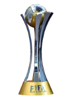 | Mundial de Clubes da FIFA | 2005 |
| 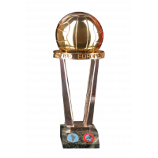 | Copa Intercontinental | 1992 e 1993 |
| 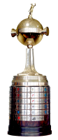 | Copa Libertadores da América | 1992, 1993 e 2005 |
| 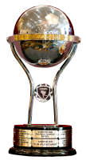 | Copa Sul-Americana | 2012 |
| 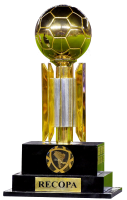 | Recopa Sul-Americana | 1993 e 1994 |
| 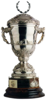 | Supercopa Libertadores | 1993 |
| 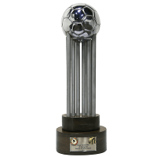 | Copa CONMEBOL | 1994 |
| 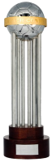 | Copa Master CONMEBOL | 1996 |
| 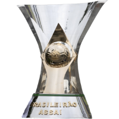 | Brasileirão | 1977, 1981, 1991, 2006, 2007 e 2008 |
| 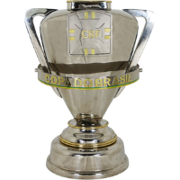 | Copa do Brasil | 2023 |
| 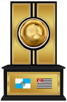 | Torneio Rio-São Paulo | 2001 |
| 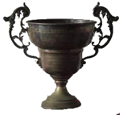 | Taça dos Campeões Rio-São Paulo | 1931, 1943, 1945, 1946, 1948, 1953, 1957, 1975, 1980, 1985, 1987 |
| 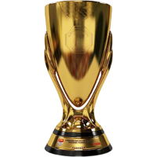 | Paulistão | 1931, 1943, 1945, 1946, 1948, 1949, 1953, 1957, 1970, 1971, 1975, 1980, 1981, 1985, 1987, 1989, 1991, 1992, 1998, 2000, 2005 e 2021 |
| 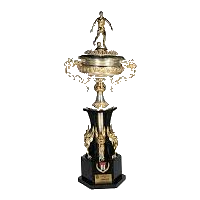 | Supercampeonato Paulista | 2002 |
Ídolos
Tele Santana
Tele Santana foi um dos técnicos mais marcantes e vitoriosos da história do São Paulo FC. Ele comandou a equipe entre os anos de 1990 e 1996, período em que o clube viveu uma fase de grande sucesso, conquistando importantes títulos.
Tele ficou conhecido por implantar um estilo de jogo ofensivo e envolvente, baseado no toque de bola e na rápida troca de passes. Com Telê Santana o São Paulo ganhou 10 títulos importantes: 2 Mundiais de Clubes (1992 e 1993), 2 Libertadores (1992 e 1993), 2 Paulistas (1991 e 1992), 1 Brasileiro (1991), 1 Supercopa (1993) e 2 Recopas (1993 e 1994).
Um fato curioso sobre Tele é que, antes da final do mundial de 1992, ele e Cruijff (sim ele mesmo, Johan Cruijff, a lenda holandesa), técnico do Bracelona na época, ficaram fascinados com o futebol de ambas as equipes, então fizeram uma espécie de pacto: Só valeria o futebol bonito, caso alguém fizesse algo contra isso, seria retirado de campo na hora. No fim, São Paulo saiu campeão, mas uma frase de Cruijff ficou marcada: Se for para ser atropelado, que seja por uma Ferrari!
Rogério Ceni
Rogério Ceni é uma das maiores lendas do futebol brasileiro e é amplamente reconhecido como um dos maiores goleiros de todos os tempos. Ele dedicou toda a sua carreira profissional ao São Paulo FC, sendo considerado um verdadeiro ídolo da equipe.
Além de suas habilidades como goleiro, Ceni se destacou por sua grande contribuição ofensiva ao time. Ele é o maior goleiro-artilheiro da história do futebol, tendo marcado mais de 130 gols em sua carreira, a maioria deles em cobranças de falta e pênaltis. Sua precisão e potência de chute eram impressionantes, o que o tornou um jogador único em sua posição.
Ceni também foi um líder dentro e fora do campo, sendo capitão do São Paulo FC por muito tempo. Sua dedicação, comprometimento e mentalidade competitiva motivaram seus companheiros de equipe e encantaram os torcedores. Ele era conhecido por sua garra e resiliência, sempre dando o máximo pelo time.
Após pendurar as luvas, Rogério Ceni iniciou uma nova carreira como treinador e também teve passagens de destaque, inclusive com o São Paulo FC. Seu legado como jogador no clube é inegável, com sua história sendo eternizada no coração dos são-paulinos e criando uma verdadeira identificação e admiração por parte dos fãs. Ele é um símbolo do São Paulo FC e uma referência para todos os goleiros e jogadores do Brasil.
Ceni atuou pelo São Paulo FC de 1990 a 2015, tendo participado de mais de 1.200 jogos pelo clube. Durante esse período, ele conquistou diversos títulos importantes, incluindo 2 Copas Libertadores da América (1993 e 2005), 1 Intercontinental (1993), 1 Mundial de Clubes da FIFA (2005), 3 Campeonatos Paulistas (1998, 2000 e 2005), 1 Copa Sul-Americana (2012), 3 Campeonatos Brasileiros (2006, 2007 e 2008), além de alguns outros títulos de menor relevância.
O Lance mais conhecido da carreira de Rogério Ceni, foi a defesa da falta de Steven Gerrard na final do Mundial de Clubes de 2005, em que ele fez o ímpossivel parecer fácil. Abaixo um vídeo sobre o lance:
Raí
Rai foi um jogador emblemático da era de Tele Santana no São Paulo. Ele atuava como meio-campista e foi um dos principais líderes da equipe durante as conquistas da Libertadores e do Mundial. Rai tinha grande habilidade técnica, inteligência tática e se destacava pela elegância e precisão nos passes.
Pelo São Paulo Raí ganhou: 1 Campeonato Brasileiro (1991), 5 Campeonatos Paulista (1989, 1991, 1992, 1998 e 2000), 2 Copas Libertadores da América (1992 e 1993) e 1 Copa Intercontinental (1992).
Rai é lembrado como um jogador talentoso, inteligente taticamente e com uma liderança natural. Sua habilidade em marcar gols e sua visão de jogo o tornaram um dos maiores ídolos do São Paulo e um dos jogadores mais respeitados do futebol brasileiro e mundial.
Luís Fabiano
Em relação a Luis Fabiano, o atacante teve duas passagens pelo São Paulo FC. A primeira ocorreu entre os anos de 2001 e 2004, quando se tornou um dos maiores artilheiros da história do clube. Ele retornou ao time em 2011 e permaneceu até 2015.
O Fabuloso foi um dos atacantes mais talentosos e prolíficos do futebol brasileiro em sua época. Ele possuía grande força física, velocidade e habilidades marcantes, como dribles e finalizações precisas. Ao longo de suas passagens pelo São Paulo, Luis Fabiano conquistou o Torneio Rio-São Paulo de 2001 e a Copa Sul-Americana de 2012.
Calleri e Luciano
Alguns podem discordar, porém, Calleri e Luciano já se tornaram ídlos do São Paulo após a conquista da Copa do Brasil. Os 2 sempre foram bons jogadores, com características diferentes, só os faltava algum título.
Jonathan Calleri é um jogador de futebol argentino que teve uma passagem pelo São Paulo Futebol Clube em 2016. Ele chegou ao clube por empréstimo do Deportivo Maldonado, do Uruguai, e rapidamente se destacou como artilheiro da equipe. Calleri marcou 16 gols em 31 jogos pelo São Paulo, demonstrando habilidade, raça e capacidade de finalização. Após 6 anos, ele volta ao São Paulo com o mesmo espírito de 2016: vontade de vencer.
Luciano, é um atacante brasileiro que joga até os dias de hoje pelo São Paulo Futebol Clube. Contratado em 2021 pelo clube paulista, em uma troca envolvendo Everton Cardoso com o Grêmio, Luciano se tornou uma peça importante no ataque são-paulino. Ele se destaca por sua velocidade, técnica, capacidade de finalização e, principalmente, sua raça.
Atualmente, Luciano tem 188 jogos, 63 gols, 21 assitências e 2 Títulos (Paulistão de 2021 e Copa do Brasil de 2023). Já Calleri, possui 121 jogos, 62 gols, 9 assitências e 1 título (Copa do Brasil de 2023).
Tanto Calleri quanto Luciano deixaram boas lembranças na torcida do São Paulo Futebol Clube, com suas contribuições no ataque e gols marcados. Ambos são jogadores que conseguiram se destacar durante suas temporadas no clube, deixando sua marca na história tricolor.
Menções Honrosas
- Zetti
- Lugano
- Miranda
- Cafu
- Mineiro
- Hernanes
- Lucas Moura
- Müller
- França
- Dagoberto
- Muricy Ramalho
- Leôniadas da Silva
Morumbi
O Estádio do Morumbi, oficialmente conhecido como Estádio Cícero Pompeu de Toledo, é um dos mais importantes e icônicos estádios de futebol do Brasil. Localizado na cidade de São Paulo, ele é a casa do São Paulo Futebol Clube desde sua inauguração, em 1960.
Com capacidade para mais de 67 mil torcedores, o estádio já recebeu diversas partidas históricas e importantes do futebol brasileiro e internacional. Uma das principais características do Morumbi é seu gramado, conhecido por ser muito bem cuidado e com boas condições de jogo.
Além de jogos de futebol, o estádio também já foi palco de grandes eventos musicais, como shows de artistas renomados tanto do Brasil quanto do exterior.
O Morumbi conta com uma estrutura moderna e completa, com diversos setores e camarotes para acomodar os torcedores. O estádio também abriga uma academia de musculação, piscina, vestiários, salas de imprensa, entre outros espaços. Apesar de todas as qualidades, o estádio passou por algumas reformas ao longo dos anos, a fim de garantir seu bom estado de conservação e atender aos padrões exigidos pela Fifa.
O Morumbi é considerado um dos templos do futebol brasileiro e é palco de grandes emoções para os torcedores do São Paulo FC e demais amantes do esporte. Sua história e importância para o cenário futebolístico nacional fazem dele um símbolo do esporte no Brasil.
Elenco
*Deixe seu aparelho com a orientação no formato de paisagem para melhor experiência